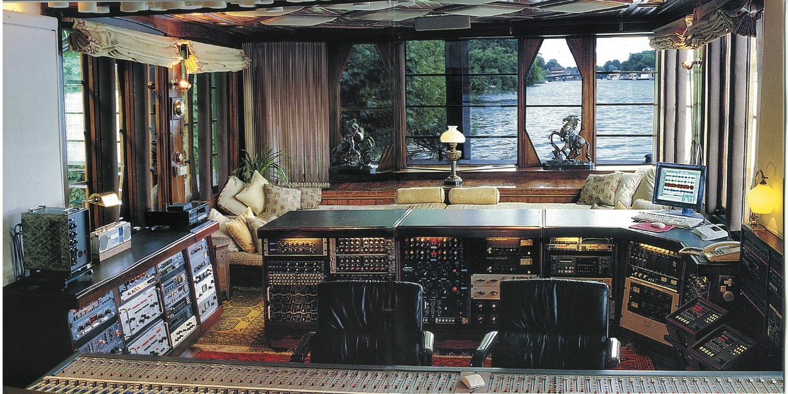

- 🏡Home🏡
- 👨🎓Schools👨🎓
- 💼Career💼
- 📈CV📉
- 🛩️Flying✈️
- ☎️Contact Me☎️
- 📜Various📜
Recording Studios!🎤
Audio & Recording Studios

All these Recording studio projects below, were undertaken between 1976 – 2016.
I'm starting with the Newest/Latest project & working backwards to 1976.
Some of these contracts were done at the customers house, where they had their private studios.
January 1976 - January 2016.
Turnkey Studio Systems, (London) Installation & Test Engineer.
I Freelanced as an Audio Installation & Test Engineer for "Turnkey Studio Systems" based in Hendon, North London. It was really convenient for me, as at the time I was living in North London & it was just a 20 minute drive away. Turnkey, was a well established company with a lot of talent in the way of Acoustics, Audio Equipment, Engineering, Sales, to full blown projects. Below are all the projects I was involved with on a sub contracting basis:-
1976 - 2016.
Andrew Latimer Singer & Songwriter (CAMEL), (London)
This was a nice project, but like all the rest of them they want it done yesterday, so always under pressure to get it done quickly.
Upgrade & Installation of new Audio Mixing Console, Audio Patch Panels, Audio Tape Recorders & sound effects units.
Complete installation, testing & commissioning of system.
Andrew was such a nice bloke. Though it was a short contact, I got on really well with him, as "Camel" are one of my favourite bands.
Try listening to the song "Lady Fantasy"
1976 - 2016.
Blackrock Recording Studios, (London) Installation & Test Engineer.This was quite a big project, whereby we had to remove the existing 24 track Audio mixer, take it back to Turnkey, have the new 48 track desk delivered, assemble it & then connect it to the rest of the equipment.
Upgraded the VTR from 24 to 48 track, as well as additional effects units.
Complete testing & commissioning of system.
Quite a challenge this one, but really enjoyed it.
1976 - 2016.
Synclavier Systems, (London)
A Click--> Synclavier is an early digital synthesizer, polyphonic digital sampling system, and music workstation manufactured by New England Digital Corporation of Norwich, Vermont, USA. It is a keyboard, but compared to a piano there was so much difference. The Synclavier could sound like a piano, but a piano couldn't sound like a Synclavier.
It could produce sounds from a single violin for example, to a full chior or, to a full orchestra. A Synclavier could cost anywhere from $25,000 to $200,000
It had widespread use among producers and professional recording studios, competing at times with high-end production systems such as the Fairlight.
General Installation of Synclavier systems.
Supply all necessary manpower for the projects.
I installed Synclavier systems in a few studios. They could do so much in reproducing all these fantastic sounds, that a lot of composers didn't have a piano, just a Synclavier.
1976 - 2016.
Andy Munro (Munro Associates), (London)
Acoustics engineer (Click--> Andy Munro) was involved with some of the biggest names in the Television & Audio Recording industry.
Small Installations of audio mixing Consoles and effects.
Involved with acoustic sound proofing within studios.
I only did the 1 job with Andy, & learn a huge amount from him on Acoustics. Nice guy!
1976 - 2016.
Logic Studios, (La Bionda, Milan, Italy)The 2 brothers (Click-->Carmello & Michelangelo) founded and started operating Logic Studios in 1985, a recording studio in Milan.
I had a fantastic oportunity to be involved in this great project. Me & a few other engineers were flown to Milan (Linate Airport), where we were put up in a great hotel. All meals were paid for & wonderful Italian food.
Work started a few days later. It was an empty building, that had all the acoustics, power, lighting & carpets installed, so it was basically ready for us to start work.
We had the Audio Mixer, Audio sound effects & all other equipment including all our tools shipped out from London. It took us around 2 months to complete the project.
Complete new Installation of control room with 48 track Audio Mixing desk and effects, including new studio.
Tested & commissioned of entire system.
Carmello & Michelangelo were talented musicians & songwriters & were such nice guys. A good thing was that I could speak Italian (not fluently), which was a great asset & at times a lot of help.
Wish that job had gone on longer!
1976 - 2016.
John Rocca, (London)Singer, songwriter(Click-->John Rocca )had a few number one hits. He was a producer, engineer & musician.
Replacement 24 track Yamaha Audio mixer installed.
Additional effects installed & new wiring.
Testing of the system.
John Rocca retired from the music business in late 1993.
1976 - 2016.
Peter Gabriel, (London)Former lead singer of the band "Genesis", singer, songwriter & record producer(Click-->Peter Gabriel )had some major hits including 'Solsbury Hill' & 'Sledgehammer'.
New installation of 96 channel Neve audio mixer, including new audio glue, patch panels wiring & furniture.
Refurbishment of control room & studio.
Complete systems test
Have a look at this! The interesting thing is that he has a stream running outside his (Click-->Recording Studio.
1976 - 2016.
Hans Zimmer (Songwriter & Musician), (London)What an absolute brilliant songwriter.(Click-->Hans Zimmer has produced some major sound tracks such as 'The Lion King, 'Gladiator', 'Pirates Of The Caribbean', 'The Dark Knight Trilogy' & many more.
New install of Audio 48 track mixer, new audio effects, patch panels etc.
Additional Mic lines installed in Studio.
Testing and commissioning of the entire system.
It was such a great contract & I was glad that I worked for such a talented man!
1976 - 2016.
Trevor Jones (Film & Music Composer), (London)Another brilliant songwriter.(Click-->Trevor Jones has composed some classics & major sound tracks such as 'Excalibur', 'Mississippi Burning', 'Last Of The Mohicans' 'Labyrinth' & many more.
Installed new 64 track Audio Mixer, audio patch panels, wiring & effects.
Tested and commissioning of the entire system.
It was such a pleasure working for Trevor. We had many a long chat, as he was from Cape Town. Another great contract, & a smashing guy.
One evening we went to a pub in crouch end, as he had arranged to meet a friend of his, & when we got there his friend was David Bowie, so we all had a few drinks & a laugh. Great times.
1976 - 2016.
Colin Thurston (Duran Duran) (London)Producer(Click-->Colin Thurston was a Producer/Co-Producer for some classic bands like 'Duran Duran', 'Human League', 'Talk Talk', 'David Bowie', Iggy Pop, 'Kajagoogoo', 'Gary Neuman' & more.
Installation of new effects equipment.
Small installation of patch panel wiring.
It was a small job, but another interesting guy who has been involved with so many classic 80's bands, so had a great time working there.
1976 - 2016.
Ray Styles (Mud), (London)Ray Stiles was the bass guitarist for the 80's band(Click-->MUD. Some of their 'Glam Rock' music included songs like 'Dyna-mite', 'Tiger Feet' & the all time classic 'Lonely This Christmas'
New 48 track SoundCraft audio mixer installed.
Effects & keyboards upgrade. New wiring installed.
Tested and commissioned the entire system.
This was another great job & a lengthy one. Had some good times there & the staff at the studio were nice & friendly people.
1976 - 2016.
Adrian Lee (Mike & the Mechanics), (London)Adrian was the Keyboard player for the 80's band(Click-->Mike & The Mechanics. formed by the former 'Genesis' Bass guitarist Mike Rutherford.
Installation of new 24 track SoundCraft Audio mixer, & associated effects, audio patch panels, wiring & glue.
Tested and commissioned the entire system.
This was another great job & a lengthy one. Had some good times there & the staff at the studio were nice & friendly people.
1976 - 2016.
Sting (Police), (London)I installed the Synclavier System for Sting at his house in Highgate.(Click-->Sting.
New Synclavier System Installation & wiring.
Tested and Commissioned.
A short but interesting project
1976 - 2016.
Jeff Beck, (London)This was an interesting project & I remember his music well.(Click-->Jeff Beck. Jeff played with one of the great bands 'The Yardbirds', with songs like 'For you love' & 'Shapes of Things'.
Installation of Seck audio mixer & general upgrade of effects & tape machines including new wiring to patch panels
Tested and commissioned the system.
A fairly big, but interesting project.
1976 - 2016.
Kim Wilde, (London)A new install of Audio equipment.(Click-->Kim Wilde. Kim did some great songs like 'Kids in America', 'You keep me hanging on' & 'Never trust a stranger'
New installation of SoundCraft 48 Channel audio mixer including V.O. booth upgrade. New wiring installed.
Tested and commissioned the system.
Kim was a really nice person to work for.
1976 - 2016.
Barry Blue (Aosis), (London)Barry was a singer & producer.(Click-->Barry Blue. He did 2 songs that I remember 'Dancing' & 'Do you wanna Dance'
Refurbishment of audio mixer & replacement of effects units including delay, flangers, etc. New wiring installed.
Tested and commissioned the system.
Nice contract!
1976 - 2016.
Simon Climey (Climey Fisher), (London)Simon was the vocalist in the group.(Click-->Simon Climey. The duo Climey Fisher, had 2 great songs 'Rise to the occasion' & 'Love Changes'
New installation of Calrec 48 Channel audio mixer including new effects upgrade. Old cabling removed & replaced with new.
Tested and commissioned the system.
Nice contract!
1976 - 2016.
Brian Bennett (The Shadows), (London)Brian Bennett is the drummer for the band 'The Shadows'. He is also a composer & producer. I installed a Synclavier system at his home 'Honeyhill studios' Radlett, Hertfordshire. (Click-->Brian Bennett. Another one of my favourite bands. In November 2009, Brian completed a 50th Anniversary reunion world tour with Cliff Richard and the Shadows.
Synclavier System Installation.
Additional effects units installed, complete with new wiring.
Studio refurbishment & additional Mic/Tie Lines installed.
Tested and commissioned the system.
What a nice project this was.
1976 - 2016.
Paul Hardcastle (19), (Essex)Paul is a Composer, Musician & Producer. I installed his new equipment at his house in Essex (Click-->Paul Hardcastle. Paul had a classic hit song '19' & 'The Wizard' was the theme tune used for the BBC's Top of the Pops.
New control room with 24 track Yamaha audio mixer plus new furniture to house effects/glue. All new wiring.
Installed temporary V.O. booth & refurbished existing one
Tested and commissioned the system.
Paul was such a nice guy & he took me to his local for a pint. Great project.
1976 - 2016.
David Gilmour, Pink Floyd (Astoria Houseboat Studio), (London)David Gilmour is a guitarist, singer & songwriter for the band 'Pink Floyd'(Click-->David Gilmour. Pink floyd had some superb albums like 'Ummagumma' 'Dark Side Of The Moon', 'Wish You Were Here', 'Animals' & 'The Wall' & many more.
De-Commissioned the Soundcraft 2400 desk & other glue & effects units from David's old home & were stored.
Converted "Astoria" Click--> House Boat to a Recording Studio (Click To Enlarge).  This is the actual DDA AMR24 Mixer with the Audio effects behind the chairs, that I installed in 'Astoria'.
We arrived at the house boat on the first day of the project, & had all the equipment delivered from "Turnkey". The fun bit as always was assembling the Audio Mixer, & setting up all the glue, then wiring it all together & finally testing the system out.
The master bedroom, was converted into a machine room, where we housed the power amplifiers, all the tape machines (VTR's), camera supplies and that sort of stuff. The room at the other end of the boat was converted so it could be used as a live room if required, running mic lines, red lights, foldback, CCTV, etc. And then air conditioning systems were put in the machine room and control room. The control room was secondarily glazed. We installed A new DDA AMR24 Mixer. A crane barge and a tug were used to get both the tape machines in through a window opening in to the master bedroom on the far side of the boat and the air conditioning unit for the control room on to the roof. There were the Turnkey crew, who had been doing the whole installation as well other different tradesmen, getting in each other's way in a fairly confined space with desk installation, wiring, electric, carpentry, glazing, air con, CCTV, decorating, etc., with the floors up and all going on at the same time and had to get the place finished and running to be ready for use.
We managed to complete the project on time.
This was by far, the best experience of my working life. Pink Floyd is my favourite band & having been given the oportunity to have done this "Astoria" project was a dream for me. I met David when he arrived at the house boat & I was fortunate to have been able to chat with him. Really nice man. It's a shame that the project had to come to an end.
1976 - 2016.
Woodlands Animations, (Postman Pat, Ivor Woods, London)This was a great job for me, as I remember when all 3 of my boys were small there was always Postman Pat playing on the TV Click-->Postman Pat. When we started the project, I was given a tour, & shown how they make the program, which was fascinating as there was so much to do even to make a short clip.
New audio effects equipment supplied & installed, & new wiring
Upgrades/refurbishment of some existing equipment.
Tested and commissioned the system.
Had some really good fun on this project, & so many nice people, & all highly skilled.
1976 - 2016.
Trillion Studios, (London)This was another great contract for me, as it went on for over 18 months in Soho. The job involved the maintainence of their in house equipment, & upgrading when required. Click-->Trillion Limehouse.
The project came to an end when the company moved to Limehouse in the docklands.
New Audio & Video upgrades of existing equipment. New installation on the Production side of the project, but mainly maintaining the Outside Broadcast Vehicles.
Again one of the best contracts. My boss on the project was a really great guy, & we became good friends.
1976 - 2016.
Molinare Studios, (Fouberts Place, London)Again, this contract for me, was as good as it gets. Situated in the heart of Soho, just off Carnaby Street, this production company was great to work at, & I spent 2 years there, in what was initially a short term contract Click-->Molinare.
Continuous installation wiring & upgrades of VTR Machines, edit suites, Audio & Video control rooms & V.O. booths.
Unfortunately, the contract ended, as all the upgrades were completed.
1976 - 2016.
Air Recording Studios (George Martin, Beatles Producer, London)This was a great contract. I heard that Air required some work to be done at the studio, and after some discussion & meetings, was given the contract. Yet another great project & smooth sailing with no problems. Click-->Air Studios.
Installation & wiring of a new 48 track Audio mixer & audio effects.
New Mic/Tie lines between patch panels & studio installed.
Management of Installation crew on the project.
Full testing of the system.
Great project & great fun doing it!
1976 - 2016.
M.T.V. (Music Television), (London)MTV & TV-am in were both in Camden town, London Click-->M.T.V./Breakfast Television Great project!
New Installation of video Production Studio, sound control room, effects etc.
Supply of all engineering personnel.
Supply of all installation materials & equipment
Testing & commissioning of complete system.
Great people to work with & great fun doing it!
1976 - 2016.
Billy Ocean, (London)I was contracted to Install some new equipment into Billy Oceans studio. Click-->Billy Ocean. He had some great songs like 'When the going gets tough', 'Caribbean Queen' & 'Get outta my dreams'
New 24 track Calrec Audio mixer installed complete with effects units.
New V.O. booth designed & constructed & wired.
Tested complete system
A perfect gentleman. Such good fun working with Billy.
1984 – 1989
This is a list of projects which are part of my CV & just as important. The reason these are separate from the others above is that they were either done on a Consultancy basis, Trade Show, Repair/Maintainence Or demonstration.
APRS (Olympia, London)
Harman (Olympia, London)
Eastlake Audio (UK)
Parkgate Studios (UK)
Hands On Trade Shows (UK)